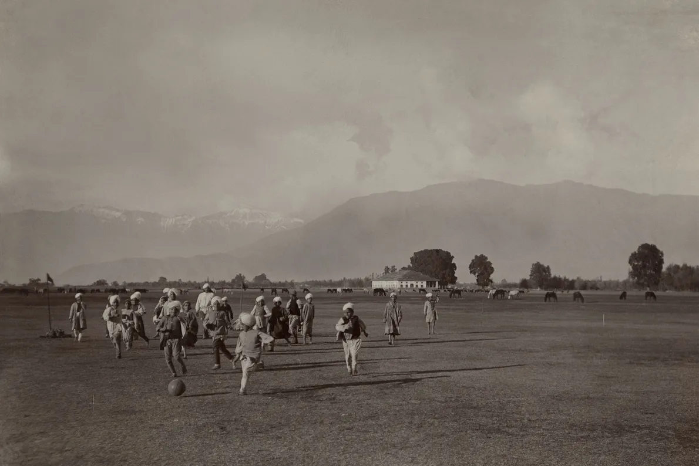
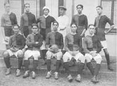
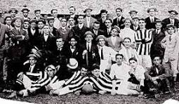

O futebol possui origens muito antigas, com diferentes povos praticando jogos que envolviam chutar uma bola. Porém, o futebol moderno começou a ser organizado na Inglaterra durante o século XIX. Em 1863, foi criada a Football Association (FA), que estabeleceu regras para padronizar o esporte. A partir daí, o futebol se espalhou por diversos países. Em 1904, foi fundada a FIFA, responsável pela organização do futebol internacional.

O futebol é um dos esportes mais populares do mundo. Suas origens estão relacionadas a jogos praticados há muitos séculos em diferentes culturas, mas o futebol moderno começou a ser organizado na Inglaterra durante o século XIX. Em 1863, foi criada a Football Association, que estabeleceu regras para o esporte. Com o passar dos anos, o futebol se espalhou por diversos países, principalmente por meio de estudantes, trabalhadores e comerciantes. Em 1904, foi criada a FIFA, responsável por organizar e desenvolver o futebol internacionalmente. A primeira Copa do Mundo aconteceu em 1930, no Uruguai, e desde então o esporte se tornou um fenômeno mundial, com milhões de jogadores e torcedores.

O futebol chegou ao Brasil no final do século XIX, trazido por Charles Miller, que retornou da Inglaterra em 1894 com bolas e regras do esporte. A partir disso, o futebol começou a ser praticado em clubes e escolas, espalhando-se rapidamente pelo país e tornando-se um dos esportes mais populares do Brasil.
